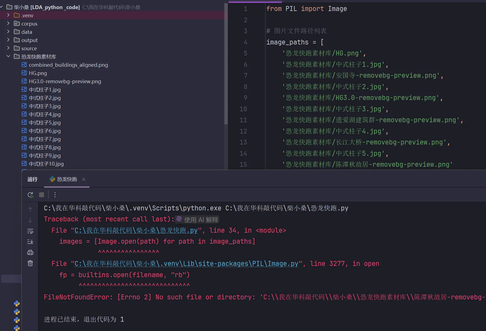
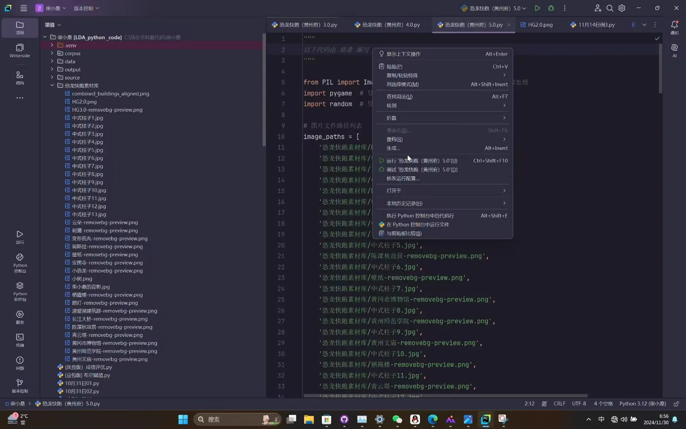
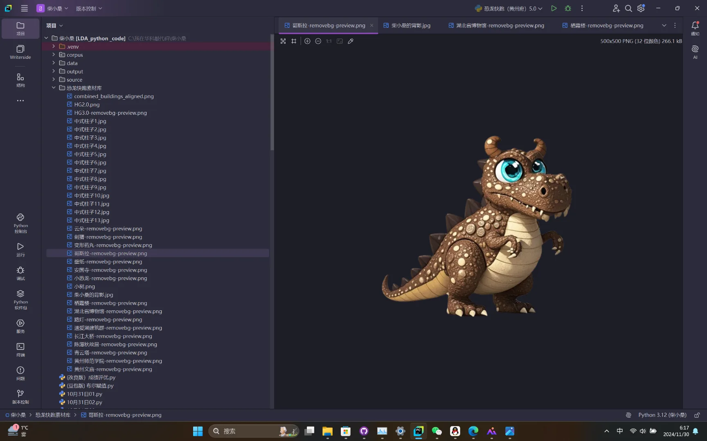
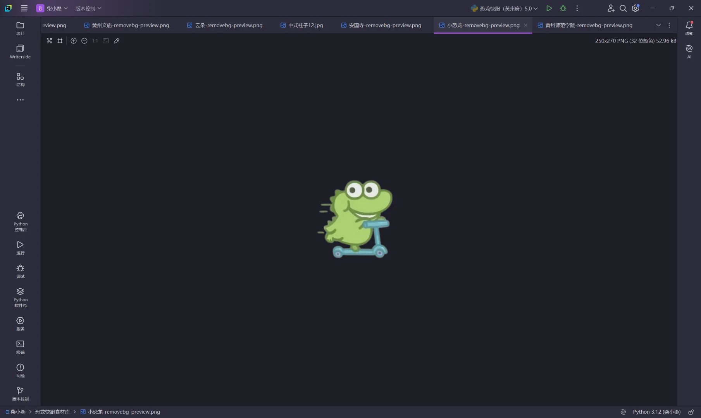
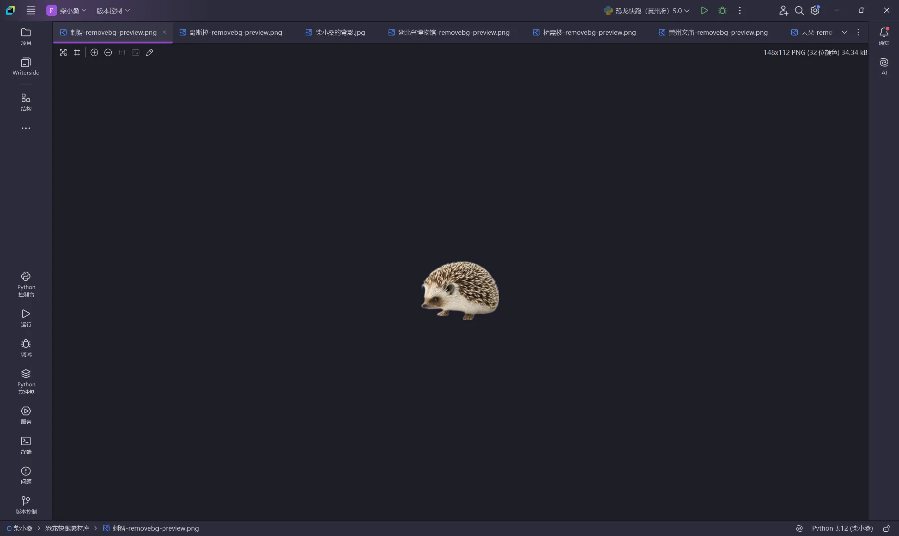

Journal · 2024-11-30
湖北省武汉市
2024年11月30日 07:52
恐龙快跑(黄州府)5.0版正在调试：
1.删除“路灯”“云朵”元素；
2.背景图改为“黄州府十二建筑”、十三个中式柱子以及一张“作者的背影”；
3.“小恐龙”可以左右移动了；
4.背景图和障碍物“小刺猬”的循环滚动速度将越来越快！
-手动分割线-
Pycharm中的“纠错提醒”真得不够形象直观，程序中的第15行代码少了个英文逗号，它告诉我第34行和第3277行有错误（总共就231行代码）。
若想复制粘贴，请关注：
https://github.com/NewtNorlly/ChaiXiaosang
这个仓库的主人就是柴桑
黄炜 : 帅哥以后作游戏发售，我一定买
2024年11月30日 10:02





Nov 30, 2024 07:52
Dino Run (Huangzhou) version 5.0 is being debugged:
1. Removed the "streetlamp" and "cloud" elements;
2. The background image is changed to "the twelve buildings of Huangzhou", thirteen Chinese-style pillars, and a "silhouette of the author";
3. The "little dino" can now move left and right;
4. The looping scroll speed of the background image and the "little hedgehog" obstacle will get faster and faster!
- manual divider -
The "error correction reminder" in PyCharm is really not vivid or intuitive enough — line 15 of the program was missing an English comma, and it told me there were errors on line 34 and line 3277 (there are only 231 lines of code in total).
If you want to copy and paste, please follow:
https://github.com/NewtNorlly/ChaiXiaosang
The owner of this repository is Chaisang
黄炜 : Dude, when you release a game someday, I'll definitely buy it
Nov 30, 2024 10:02
30 nov. 2024 07:52
La version 5.0 de Dino Run (Huangzhou) est en cours de débogage :
1. Suppression des éléments « lampadaire » et « nuage » ;
2. L'image de fond est remplacée par « les douze bâtiments de Huangzhou », treize piliers de style chinois et une « silhouette de l'auteur » ;
3. Le « petit dinosaure » peut désormais se déplacer à gauche et à droite ;
4. La vitesse de défilement en boucle de l'image de fond et de l'obstacle « petit hérisson » sera de plus en plus rapide !
- ligne de séparation manuelle -
Le « rappel de correction d'erreur » de PyCharm n'est vraiment pas assez imagé ni intuitif : il manquait une virgule anglaise à la ligne 15 du programme, et il m'a signalé des erreurs aux lignes 34 et 3277 (alors qu'il n'y a que 231 lignes de code au total).
Si vous voulez copier-coller, veuillez suivre :
https://github.com/NewtNorlly/ChaiXiaosang
Le propriétaire de ce dépôt est Chaisang
黄炜 : Beau gosse, quand tu sortiras un jeu un jour, je l'achèterai à coup sûr
30 nov. 2024 10:02
30.11.2024 07:52
Dino Run (Huangzhou) Version 5.0 wird gerade debuggt:
1. Die Elemente „Straßenlaterne“ und „Wolke“ wurden entfernt;
2. Das Hintergrundbild wurde geändert zu „die zwölf Gebäude von Huangzhou“, dreizehn chinesischen Säulen und einem „Rücken des Autors“;
3. Der „kleine Dino“ kann sich jetzt nach links und rechts bewegen;
4. Die Loop-Scrollgeschwindigkeit des Hintergrundbilds und des „kleinen Igel“-Hindernisses wird immer schneller!
- manuelle Trennlinie -
Die „Fehlerkorrektur-Erinnerung“ in PyCharm ist wirklich nicht anschaulich oder intuitiv genug — in Zeile 15 des Programms fehlte ein englisches Komma, und es meldete mir Fehler in Zeile 34 und Zeile 3277 (insgesamt gibt es nur 231 Codezeilen).
Wenn ihr kopieren und einfügen wollt, folgt bitte:
https://github.com/NewtNorlly/ChaiXiaosang
Der Besitzer dieses Repositories ist Chaisang
黄炜 : Hey du, wenn du später mal ein Spiel veröffentlichst, kaufe ich es bestimmt
30.11.2024 10:02